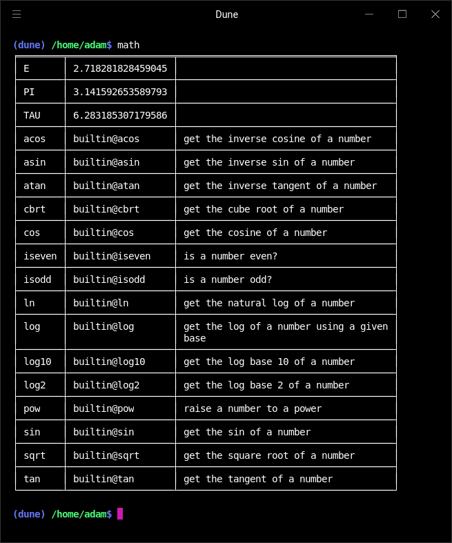
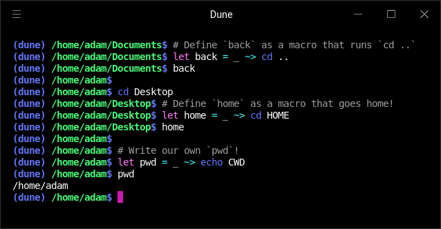
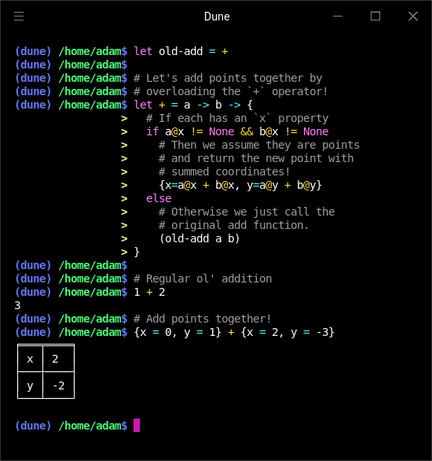

Showcase
ARITHMETIC OPERATORS#
Below is the list of arithmetic operators available in Dune. These operators each behave similarly to how they’re used in Python – integers and floats can be used interchangeably, but will default to integer arithmetic if both operands are integers. You can multiply lists or strings by integers to repeat them, and you can add lists or strings together to concatenate them.
| Operator | Description |
|---|---|
+ |
Add two expressions. |
- |
Subtract two expressions. |
* |
Multiply two expressions. |
// |
Divide two expressions. |
% |
Get the remainder after division of two expressions. |
PIPING AND REDIRECTION#
Piping and redirection are done with the |, >>, and >>> operators. Here’s some example uses!
| Operator | Description |
|---|---|
| |
Pipe the output of the left command to the input of the right command. |
<< |
Read a file’s contents. |
>> |
Write the output of the left command to a file. |
>>> |
Append the output of the left command to a file. |
BOOLEAN OPERATORS#
The basic operators for boolean logic in Dune are listed below. These operators can be used to compare values, perform boolean operations, and index into lists and dictionaries.
| Operator | Description |
|---|---|
! |
Perform a boolean not for one or many truthy values. |
&& |
Perform a boolean and for a list of truthy values. |
|| |
Perform a boolean or for a list of truthy values. |
!= |
Compare two values for inequality. |
< |
Determine the order of two values. |
<= |
Determine the order of two values. |
== |
Compare two values for equality. |
> |
Determine the order of two values. |
>= |
Determine the order of two values. |
CONTAINER ACCESS#
Dune allows you to index into dictionaries and lists using the @ operator. This operator can be used to access the value at a given key in a dictionary or the value at a given index in a list.
| Operator | Description |
|---|---|
@ |
Index a dictionary or list. |
When used with a list, the @ operator is used on a list with a number index (list@N). When used with a dictionary, the @ operator is used on a dictionary with a key index, a symbol or a string (dict@key-name).
STANDARD LIBRARY#
Dune offers an extensive standard library, and also provides a pretty interface to see all the functions available in each module!
To see the entire standard library available to you, simply enter std into the command line. This will print out the entire set of nested standard library modules and their functions plus constants!
CREATING ALIASES FOR PROGRAMS#
Dune allows you to create aliases for programs through the let keyword and a quoted symbol. Below, we bind the quoted symbol 'bat to the symbol cat. So, whenever we use the symbol cat, it will evaluate to the symbol bat.
MACROS IN DUNE#
To write functions that modify your shell’s environment and act like commands, use a macro!
Macros, when called with zero arguments, are passed the current working directory. When invoked, they assume the environment of the callee: if you execute macro, it will execute as if you executed the contents of the macro itself with the parameter defined as the argument passed.
FUNCTIONAL PROGRAMMING#
Dune supports functional programming! You can use functions like map, filter, and reduce to manipulate lists and other data structures. Dune also supports anonymous functions and closures with a concise syntax.
OPERATOR OVERLOADING#
All of the operators in Dune are implemented as function applications on the symbols that represent them. This means that you can overload operators to do whatever you want!
